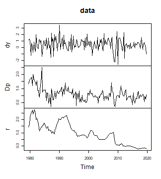

Introduction
For the vector autoregressive (VAR) model
the Minnesota prior reflects a belief that own lags of an endogenous variable in coefficient matrix are more likely to be important explanatory variables than other lags. Moreover, more recent lags are likely to be more important than those in the more distant past. In a Bayesian VAR model, this is reflected in the prior covariance matrix of the model’s coefficients, where a small variance indicates a belief that the coefficient is not important. Mathematically, the Minnesota prior can be expressed by the following way: For the endogenous variable the prior variance of the th lag of regressor is obtained as
where
is the residual standard deviation of variable
of an unrestricted LS estimate. For exogenous variables
is the sample standard deviation. If the model does not contain
exogenous variables, argument kappa3 will be ignored.
This vignette illustrates how to use the bvartools
package to work with the Minnesota prior along the lines of exercise
20.2 in Chan et al. (2019). It uses data set at_macrodata,
which contains quarterly macroeconomic series of Austria, and takes from
it the growth rate of real GDP (dy), inflation
(Dp) and the short-term interest rate (r), all
in percent per quarter and up to 2019Q4, which leaves out the quarters
in which the pandemic moved output growth by ten percent.
library(bvartools)
# Load data
data("at_macrodata")
at <- at_macrodata[["domestic"]]
data <- ts.intersect(dy = diff(at[, "y"]), Dp = at[, "Dp"], r = at[, "r"]) * 100
data <- window(data, end = c(2019, 4))
# Plot the series
plot(data)
plot of chunk data
Workflow for VAR models
Create a model
The create_bvarmodel function produces an object, which
contains information on the specification of the VAR model that should
be estimated. The following code specifies a VAR(1) model with an
intercept term. The number of iterations and burn-in draws is already
specified at this stage.
model <- create_bvarmodel(data, p = 1, deterministic = "const",
iterations = 5000, burnin = 1000)Adding model priors
Direct approach
Minnesota priors can be obtained with function
minnesota_prior.
minn <- minnesota_prior(
model,
kappa1 = 0.5,
kappa2 = 0.5,
kappa3 = NULL,
kappa4 = 200,
max_var = NULL,
coint_var = FALSE,
sigma = "AR"
)To check the output of the function, access element mu,
i.e. the prior coefficient means of matrix
:
matrix(minn[["mu"]], 3)
#> [,1] [,2] [,3] [,4]
#> [1,] 0 0 0 0
#> [2,] 0 0 0 0
#> [3,] 0 0 0 0Also check the corresponding prior coefficient variances:
Using add_priors
Function add_priors produces priors for the specified
model(s) in object model and augments the object
accordingly.
model <- add_priors(model,
coef = list(minnesota = list(kappa1 = 0.5, kappa2 = 0.5, kappa3 = NULL, kappa4 = 200)),
sigma = list(df = 1, scale = .0001))Adding initial values
Function add_initial_values adds initial values of
posterior coefficients. The default behaviour of the function is to
obtain an LS estimate of the coefficients.
model <- add_initial_values(model, method = "ols")Obtaining posterior draws
# Reset random number generator for reproducibility
set.seed(1234567)
iterations <- 10000 # Number of saved iterations of the Gibbs sampler
burnin <- 5000 # Number of burn-in draws
draws <- iterations + burnin # Total number of MCMC draws
y <- t(model[["data"]][["train"]][["y"]])
x <- t(model[["data"]][["train"]][["x"]])
tt <- ncol(y) # Number of observations
k <- nrow(y) # Number of endogenous variables
m <- k * nrow(x) # Number of estimated coefficients
# Coefficient priors
a_mu_prior <- model[["priors"]][["a"]][["mu"]] # Vector of prior parameter means
a_v_i_prior <- model[["priors"]][["a"]][["v_inv"]] # Inverse of the prior covariance matrix
# Use the error variance estimates from minnesota_prior
u_sigma_i <- minn[["sigma_inv"]]
u_sigma <- solve(u_sigma_i)
# Data containers for posterior draws
draws_a <- matrix(NA, m, iterations)
draws_sigma <- matrix(NA, k^2, iterations)
# Start Gibbs sampler
for (draw in 1:draws) {
# Draw conditional mean parameters
a <- post_normal(y, x, u_sigma_i, a_mu_prior, a_v_i_prior)
# Store draws
if (draw > burnin) {
draws_a[, draw - burnin] <- a
draws_sigma[, draw - burnin] <- u_sigma
}
}Collect the results in a new bvarmodel object using
bvar.
result <- bvar(y = model[["data"]][["train"]][["y"]],
x = model[["data"]][["train"]][["x"]],
A = draws_a[1:9,],
C = draws_a[10:12, ],
Sigma = draws_sigma)Look at the summary statistics, which are practically the same as in example 20.3 in Chan et al. (2019).
summary(result)
#>
#> Bayesian VAR model with p = 1
#>
#> Endogenous variables: dy, Dp, r
#>
#> Variable: dy
#>
#> Mean SD Naive SD Time-series SD 2.5% 50%
#> dy.l1 -0.05763831 0.07984344 0.0007984344 0.0007984344 -0.2173037 -0.05587954
#> Dp.l1 -0.15101396 0.20068202 0.0020068202 0.0020398831 -0.5398237 -0.15327508
#> r.l1 0.06146476 0.11474281 0.0011474281 0.0011474281 -0.1633870 0.06150310
#> const 0.54960107 0.13535547 0.0013535547 0.0013535547 0.2792208 0.55161855
#> 97.5%
#> dy.l1 0.09616976
#> Dp.l1 0.23934329
#> r.l1 0.28662474
#> const 0.81593282 *
#>
#> Variable: Dp
#>
#> Mean SD Naive SD Time-series SD 2.5% 50%
#> dy.l1 0.03037819 0.03017892 0.0003017892 0.0003017892 -0.02910958 0.03055016
#> Dp.l1 0.42147632 0.07751895 0.0007751895 0.0007751895 0.26652839 0.42161616
#> r.l1 0.16525958 0.04406617 0.0004406617 0.0004406617 0.07918762 0.16562901
#> const 0.18596442 0.05214480 0.0005214480 0.0005214480 0.08519452 0.18569175
#> 97.5%
#> dy.l1 0.08953386
#> Dp.l1 0.57334607 *
#> r.l1 0.25071585 *
#> const 0.28754472 *
#>
#> Variable: r
#>
#> Mean SD Naive SD Time-series SD 2.5%
#> dy.l1 0.04608170 0.01051663 0.0001051663 0.0001051663 0.02569123
#> Dp.l1 0.09862443 0.02720400 0.0002720400 0.0002720400 0.04505687
#> r.l1 0.95823096 0.01569508 0.0001569508 0.0001569508 0.92789816
#> const -0.05516448 0.01854943 0.0001854943 0.0001811623 -0.09164759
#> 50% 97.5%
#> dy.l1 0.04612159 0.06666502 *
#> Dp.l1 0.09860562 0.15172543 *
#> r.l1 0.95796597 0.98870707 *
#> const -0.05513727 -0.01848947 *
#>
#> Variance-covariance matrix:
#>
#> Mean SD Naive SD Time-series SD 2.5% 50% 97.5%
#> dy_dy 0.86222971 0 0 0 0.86222971 0.86222971 0.86222971 *
#> dy_Dp 0.00000000 0 0 0 0.00000000 0.00000000 0.00000000
#> dy_r 0.00000000 0 0 0 0.00000000 0.00000000 0.00000000
#> Dp_Dp 0.12710345 0 0 0 0.12710345 0.12710345 0.12710345 *
#> Dp_r 0.00000000 0 0 0 0.00000000 0.00000000 0.00000000
#> r_r 0.01593417 0 0 0 0.01593417 0.01593417 0.01593417 *Citing bvartools
If you use bvartools in published work, please cite it.
citation("bvartools") prints the reference, and the package
has the DOI 10.5281/zenodo.22736604,
which always resolves to the latest archived version.